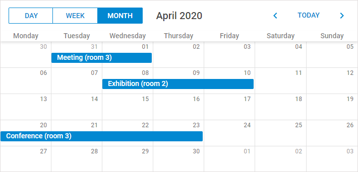
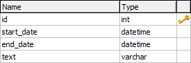

In this tutorial we want to consider the creation of a standard scheduler that loads data from a database and saves it back. The final code of the tutorial can be used as the start point while creating applications with dhtmlxScheduler.

Related sample: Loading data from a database
Let's start our application with creating a new HTML file and including the required scheduler code files to it.
The required code files are:
<!DOCTYPE html>
<html>
<head>
<title>How to start</title>
<script src="../scheduler/dhtmlxscheduler.js" type="text/javascript"></script>
<link rel="stylesheet" href="../scheduler/dhtmlxscheduler_material.css"
type="text/css">
</head>
<body>
//your code will be here
</body>
</html>
Let's quickly explore the structure of the dhtmlxScheduler package to find out where to look for the files.
Before initialization of the scheduler, you should define the related DIV containers for its elements.
The standard set of 'divs' (needed for the scheduler) looks like this:
<div id="scheduler_here" class="dhx_cal_container" style='width:100%; height:100%;'>
<div class="dhx_cal_navline">
<div class="dhx_cal_prev_button"> </div>
<div class="dhx_cal_next_button"> </div>
<div class="dhx_cal_today_button"></div>
<div class="dhx_cal_date"></div>
<div class="dhx_cal_tab" name="day_tab" style="right:204px;"></div>
<div class="dhx_cal_tab" name="week_tab" style="right:140px;"></div>
<div class="dhx_cal_tab" name="month_tab" style="right:76px;"></div>
</div>
<div class="dhx_cal_header"></div>
<div class="dhx_cal_data"></div>
</div>
To work correctly in the full-screen mode in different browsers, define the following style for the scheduler:
<style type="text/css" media="screen">
html, body{
margin:0px;
padding:0px;
height:100%;
overflow:hidden;
}
</style>
If you don't use the full-screen mode, you don't need to specify that style. Specify the desired css properties directly in the main div:
<div id="scheduler_here" class="dhx_cal_container"
style="width:200px; height:300px; padding:10px;"/>
...
After you have finished the preparations, you can move to initialization. Beware, the scheduler is a static object and can be instantiated on the page once. To refer to the scheduler's instance, use dhtmlxScheduler or simply scheduler.
scheduler.init('scheduler_here', new Date(),"month");
If you run the app now, you can already see a scheduler on the page. But it won't contain any data.
To populate the scheduler, we will take the data from a sample data source. We will use the easiest of the ways and specify the data source as an inline object.
To load data from an inline object, use the parse method.
The properties of a data object are:
var events = [
{id:1, text:"Meeting", start_date:"04/11/2018 14:00",end_date:"04/11/2018 17:00"},
{id:2, text:"Conference",start_date:"04/15/2018 12:00",end_date:"04/18/2018 19:00"},
{id:3, text:"Interview", start_date:"04/24/2018 09:00",end_date:"04/24/2018 10:00"}
];
scheduler.parse(events, "json"); // takes the name and format of the data source
You can also load data from the server.
See details on integration with the server side in the Server-Side Integration article.
Read this and further steps if you want to load data from a database instead of an inline object.
Now, if you have decided to load data from the server, you need to create a table in your database as in:

You can execute the following code to create the table:
CREATE TABLE `events` (
`id` int(11) NOT NULL AUTO_INCREMENT,
`start_date` datetime NOT NULL,
`end_date` datetime NOT NULL,
`text` varchar(255) NOT NULL,
PRIMARY KEY (`id`)
)
Besides the aforementioned fields, you can create any number of extra ones, which then can be passed to the client side and mapped to the lightbox.
Beware, the format of the DataTime data type is '%Y-%m-%d %H:%i' that differs from the date format expected by the scheduler ('%m/%d/%Y %H:%i'). So, to provide correct data conversion, you should change the default scheduler format. It can be achieved by specifying the xml_date configuration option.
Note, any configuration options go BEFORE the initialization string, i.e.:
scheduler.config.xml_date="%Y-%m-%d %H:%i";
...
scheduler.init('scheduler_here',new Date(),"month");
To load data from a database, use the load method where specify a file realizing server-side 'communication' as a parameter.
You can use dhtmlxConnector library for a quick start, as shown in this tutorial, but for a new project we recommend implementing the backend API manually, for greater flexibility. See details in the Server-Side Integration article.
So, for our task you need to call the method as shown below:
//method takes the url to the file that will process CRUD operations on the server
scheduler.load("data/connector.php");
The server-side script for dhtmlxScheduler is the following:
<?php
require_once("../codebase/connector/scheduler_connector.php");
$res=mysql_connect("localhost","root","");
mysql_select_db("schedulerDB");
$conn = new SchedulerConnector($res);
$conn->render_table("events","id","start_date,end_date,text");
Please note that the order of columns in $connector->render_table is important. The first three columns in the columns list are mapped to start_date/end_date/text properties of the client-side task object respectively, no matter what column names you specify:
$conn->render_table("events","EventId","Start,End,Name,details","");
//JS: event.id, event.start_date, event.end_date, event.text, event.text, event.details
All other columns will be mapped by their names without changes:
$conn->render_table("events","id","start_date,end_date,text,custom,details","");
// JS: event.start_date, event.end_date, event.text, event.custom, event.details
You can also use aliases, as follows:
$conn->render_table("events","id",
"start_date,end_date,text,custom_column(customProperty),details","");
//JS:event.start_date, event.end_date, event.text, event.customProperty, event.details
If you run the app now, you will see that the scheduler is able to load data from the database, but unable to save it back. To 'force' the scheduler save data in the database, use dataProcessor.
It's very easy to use dataProcessor. All you need is to initialize it and attach to the scheduler.
var dp = new dataProcessor("data/connector.php");
dp.init(scheduler);
That's all. A standard scheduler that can load data from the database and save it back is ready.
Now you may configure, change and customize it to meet all your needs.
Related sample: Loading data from a database
Back to top